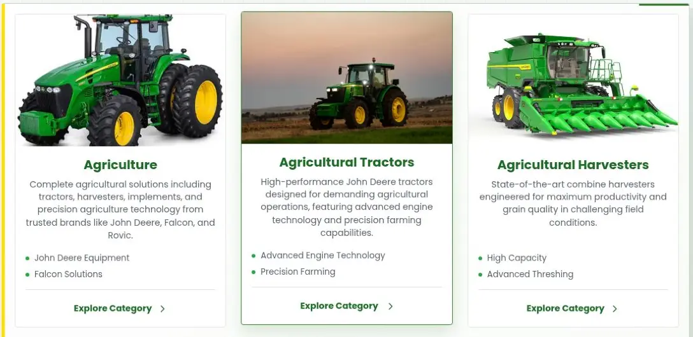

01 / Business software
Equipment catalogue & administration
Application development · React, Firebase & release tooling

Helping customers find equipment, with the tools to maintain the catalogue behind the scenes.
I developed public product pages and administration workflows, alongside consent-aware reporting and checks for deploying changes.
- Customer experience
- Server-rendered product pages make the equipment range browsable by category.
- Administration
- Catalogue and enquiry workflows connect the public site to day-to-day content management.
- Engineering care
- Access-rule tests and release verification check permissions and the integrity of published assets.
Engineering details
Analytics use batched events, retry handling and scheduled Firestore aggregation. Release tooling produces SHA-256 manifests and checks for conflicting immutable assets. Access-rule tests exercise allowed and denied operations.